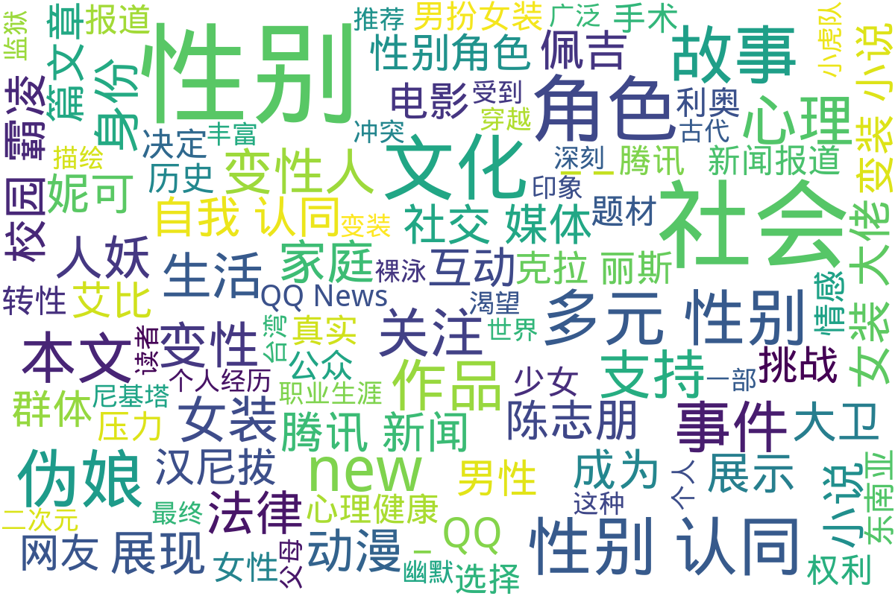

腾讯
该目录包含来自腾讯媒介的一系列关于多元性别的作品与报道，涉及漫画、视频、新闻文章和文学作品等多种形式。《我的伪娘室友》是腾讯动漫发布的一部漫画作品，第九话描述了伪娘角色的生活细节和身份认同的探讨，以及人物间的互动与冲突。台湾影片《迷失安狄》的预告片展示了变性人在社会中的挑战，试图引发公众对多元性别的关注。腾讯新闻中的多篇文章探讨了男性穿女装的文化现象、校园霸凌事件下的性别问题，以及跨性别者的真实故事等，分析了社会、医学与文化对性别认同的影响。此外，目录中还有变装小说的推荐，通过轻松幽默的方式展现变装文化的多样性，反映当代社会对性别流动性的接纳与理解。这些内容共同丰富了关于多元性别的视角与表达，促进了对性别认同和性别角色的深入思考。
标签: 多元性别, 伪娘, 变性人, 校园霸凌, 性别认同, 文化现象, 漫画, 影视作品, 文学, 社会问题, 心理斗争, 性别流动性
总计 17 篇内容
🌐 网页
2024
news_性别可以被强行更改吗？“世界上最成功变性人”之死_-_QQ_News查看摘要
本文探讨了大卫·赖默（David Reimer）的悲剧性故事，揭示了性别认同的复杂性。1967年，年幼的大卫因医疗事故失去阴茎后，医生和父母在约翰·莫尼的主导下，决定进行性别转换手术，试图将他抚养成女孩。这一过程中，导致了大卫的长期心理痛苦与挣扎。大卫的故事不仅展示了医疗伦理的缺失以及对儿童权利的忽视，同时也引发了关于性别认同与性别社会建构的重要讨论。最终，在被迫承受的性别角色与真实自我的冲突中，大卫于38岁时自杀，带走了一个未被认可的完整生命。该文呼吁社会对性别认同的复杂性进行更深入的理解与探讨。
news_知名涩涩画师出新作，伪娘男主比女主人气高..._-_QQ_News查看摘要
这篇文章来自腾讯新闻，由作者碎碎念工坊撰写，介绍了一款名为《漫步少女世界的方法》的galgame新作。文章讨论了作为男主角的伪娘角色片桐由衣如何比女主人公更受欢迎，甚至在游戏的公开设定中透露了多种颓废和复杂的社会元素。画师mignon的精细画风让人印象深刻，尤其是在描绘伪娘男主的形象时，展示出完美的少女体态。文章还涉及到作品的编剧背景，提到此类伪娘角色在当前文化中受到欢迎，将性别设定和故事情节进行了深刻的讨论，反映了这种设定在当今二次元文化中的重要性。
本文件为一系列变装小说的推荐列表，包括不同类别的小说，如变装CD小说、道士僵尸变装小说、少女穿越变装小说和老头修仙变装小说等。这些小说涵盖了从古代言情到仙侠奇幻的多个主题，展现了变装题材在中文文学中的丰富多样性。文件中提供了每本推荐小说的简要描述，指出了角色的性别扮演以及主要情节，如《变装：黑化男主快放手》中女主穿男装探寻男主的案件以及《神医丑女：腹黑傻王俏皮妃》中少女穿越的情节。文件还列举了相关作品的链接，为读者提供了方便的获取渠道。
2023
new_孤立-殴打-性侵：校园霸凌恶性升级，谁才是第一责任人？-腾讯新闻查看摘要
本文讨论了山西大同市大成双语学校一起校园霸凌案件，该事件中一名四年级男生遭到了同宿舍两名男生的严重欺凌和性侵行为。受害者在长期遭受强迫喝尿、吃粪便等虐待后，精神状态极度不佳，抑郁轻生。事件引发了社会广泛关注，许多声音呼吁加强对校园霸凌的监管与处罚。文章分析了校园霸凌的普遍性，强调老师和家长在处理校园暴力中的重要责任，并提出了改进的建议，如老师应采取零容忍态度和家庭教育的重视等。通过传统和网络的案例，文章揭示了校园霸凌行为的复杂性，以及对孩子心理的长期影响。
news_《朱诺》女主变性后再晒胸上巨型手术疤痕，个人自传即将上线查看摘要
本文报道了著名演员艾略特·佩吉（Elliot Page）变性后的感悟与生活，特别是他在社交平台上分享的赤裸照片，展示了他胸前的手术疤痕，标志着重要的生命转变。文章回顾了佩吉的职业生涯，从童星到知名演员的经历，强调了他的电影作品《朱诺》及其成功的背后。佩吉在2014年公开出柜，成为跨性别者，并在经历变性手术后，享受全新的生活，感受到前所未有的快乐。此外，他的自传即将发布，引发了公众的关注和期待。
news_为什么在东南亚各国，不仅人妖多，而且连“娘娘腔”也多？-腾讯新闻查看摘要
该文件为一篇关于东南亚地区性别多样性的新闻报道，作者是刘小顺，发表于2023年11月30日，来源为腾讯新闻。本文探讨了东南亚国家（如泰国、菲律宾、柬埔寨、马来西亚、印尼等）的人妖文化及其背后的社会和文化原因。作品提出，过去对于人妖的理解常将其与贫穷联系在一起，而作者通过深入旅游发现，很多人妖其实是自愿选择这一身份。文章还提到东南亚男性的性别表现，包括异装癖和“娘娘腔”的现象，探讨了这种文化现象的根源。文中还放置了多张相关图片，包括人妖表演，增强了内容的直观性和趣味性。
news_陈志朋：被大师损事业，视“人妖”为笑话，被嘲不红却自认顶流查看摘要
本文探讨了陈志朋这位华语娱乐圈明星的职业生涯与个人经历。文章讲述了他在小虎队时期的成功以及解散后的挑战，尤其是他如何应对行业内的批评和个人的困扰。文中提到陈志朋在某次活动中遭到主持人的调侃，感到受伤，并因此对“小虎队”三字产生了抵触情绪。这种情绪导致他在商业活动中不愿提及过去，甚至对于任何关于他不红的说法，陈志朋都表现出强烈的不满。随着个人风格的演变，他开始尝试更为大胆的服装和造型，尽管因此受到外界的嘲讽，他却始终坚持展现自己的多面性。文章还揭示了陈志朋在社交媒体及直播带货方面的现状，以及对自己身份和事业的定位，表现出他对成就的渴望和不安。整个内容不仅反映了个体在娱乐行业中面对的压力和挑战，也寄托了对多元性别表现的某种理解与反思。
2022
new_不得已，异装癖？男人为啥穿女装？｜循迹晓讲-腾讯新闻查看摘要
该文件是一篇腾讯新闻的文章，通过整合多段历史和现代的男扮女装的实例，探讨了男性穿着女装的文化现象。这篇文章由赛艇队长主讲，具备丰富的历史背景资料，从中国古代到现代战争中男扮女装的各类故事进行了讲解。文中提到了一些著名的历史人物和事件，例如隋末唐初的李密、法国财政官迪昂、以及劳伦斯等，分析了男扮女装背后的社会与心理动因。文章以轻松幽默的方式呈现了男性在特定情况下为何选择穿女装，并通过幽默的语言描述了这些历史事件，展现了性别角色和社会期望的复杂交织。
news_美国千万粉跨性网红裸泳袭警被捕，直接关男监？委屈向法官求情却_查看摘要
本文讲述了跨性别网红尼基塔·阮在美国因裸泳而被捕的事件。尼基塔是一名拥有数百万粉丝的跨性别女性，因她的个人经历而颇具知名度。文章详细描述了事件的经过，包括她在经历精神崩溃后在酒店裸泳，并与警方发生冲突的经过。她在法庭上被要求进入男子监狱的决定引发了公众对跨性别者应有的权利和监狱系统如何处理跨性别囚犯的广泛讨论。多名网友在社交媒体上对此事件表示关注，对法官和警察的决定表示严厉批评，同时也引发了一些对跨性别者安全和法律定义的争论。本文不仅提供了事件的直接描述，还包含了社会对待跨性别者安全与权利的复杂态度。
2021
new_女装大佬艾比转性成功，进女厕名正言顺，动漫中有哪些女装大佬？查看摘要
本文讨论了女装大佬艾比的转性成功及其在动漫文化中的重要性。艾比因其在2019年漫展期间cosplay女性角色而备受关注，随后因进入女厕引起争议。在微博上，艾比宣布她已成功转性，成为一名女性。同时，文章提及了动漫中多个知名的女装大佬角色，如《海贼王》中的小菊、《火影忍者》中的白和《东京喰种》中的金木研。这些角色的存在反映了社会对性别角色的复杂认知和接受度。文章探讨了女装大佬这一群体作为社会中一个特殊存在的意义，并邀请网友分享自己的看法和感受，介绍了动漫中的女装元素与社会现象的相互联系。
news_什么是真正的恐怖片？这部电影告诉你_-_QQ_News查看摘要
这篇文章深入探讨了经典电影《沉默的羔羊》，分析了电影中的反派角色汉尼拔·莱克特和主角克拉丽斯之间的复杂关系。文章提到汉尼拔的角色塑造极具深度，不仅展现了他食人的恐怖形象，同时也揭示了他与克拉丽斯之间微妙的情感互动。通过对克拉丽斯童年经历的回忆、汉尼拔的机智表演及整部影片对人性的分析，作者指出了这部电影的恐怖实质不在于血腥场面，而在于对人性的残酷剖析。文章最后还探讨了汉尼拔的哲学观，即人类的贪婪与虚伪，并展现了克拉丽斯在面对他时的脆弱与勇气。
news_从小萝莉到腹肌男《盗梦空间》女星艾利奥特·佩吉变性惊呆网友查看摘要
本文报道了《盗梦空间》女星艾利奥特·佩吉（Elliot Page）的变性经历与个人生活。艾利奥特·佩吉在2021年5月25日首次在社交平台上发布了变性后的泳照，引发网友的广泛关注与讨论。文章回顾了佩吉的职业生涯起步，从童星到获得奥斯卡提名的演员的精彩经历，并强调了他的勇气与自信。在这篇文章中，许多网友在评论中表达了对佩吉变性决定的支持与鼓励，同时也反映出社会对变性人群体的复杂反应与讨论。通过对佩吉的身份转变和社交媒体反响的记录，这篇报道揭示了在现代社会中多元性别身份的重要性和影响。
weread_成为妮可查看摘要
《成为妮可》是由艾米·埃利斯·纳特撰写的一部纪实文学作品，讲述了一个关于跨性别者妮可的真实故事。故事通过个人日记、家庭录像、新闻报道和法律文件，真实再现了妮可从一个性别困惑的男孩到最终自信地成为女孩的转变过程。作品深刻反映了传统社会对跨性别者的偏见与不理解，以及妮可的家庭如何在社会压力下逐渐学习接受和支持她的选择。随着时间的推移，妮可在父母、兄弟及法律的支持下，成功地完成了性别转变，并最终实现了内心的自我认同。书中不仅探讨了跨性别者的心理历程，也展示了他们所面临的外部挑战与心理斗争，是一本值得每个人关注的作品。
2020
news_17岁的跨性别少年：那个身体太丑了，我为什么不是女孩子_-_QQ_News查看摘要
这篇文章讲述了一位17岁跨性别少年黄晓迪的真实故事。黄晓迪不喜欢自己的男性身体，渴望得到家庭的理解与支持，但却面临着来自家庭和社会的压力。他曾多次选择逃离家庭，寻找自我认同。文章中详细描绘了他的逃亡经历，描述了他与父母的关系，以及在这条跨性别道路上的艰辛与挣扎。在他的故事中，其他跨性别者的经历也被提及，强调了他们在寻求认同和支持过程中所经历的苦难与渴望。此外，文章还探讨了家庭成员与跨性别者关系的重要性，并呼吁社会对跨性别群体的包容与理解。
2019
《伪娘的二次元》是星音的小梦创作的一部网络小说，体现了多元性别文化的探索和表现。作品围绕着穿着女装的角色，通过轻松幽默的方式讲述了他们在幻想世界中的冒险与互动。文中不乏对女装文化的描绘，如角色们在冒险中引发的性别认同与关系动荡，同时反映了社会对性别角色的刻板印象与冲突。最新的章节更新于2019年6月19日，涵盖了52章，内容生动有趣，吸引了众多读者的关注。章节中提到的角色，如亚丝娜、五河士织等，受到粉丝的喜爱，展现了年轻一代对性别流动性及其相关主题的思考与接受。
时间未知，按收录顺序排列
ac_我的伪娘室友_-_腾讯动漫查看摘要
《我的伪娘室友》是由腾讯动漫发布的一部关于多元性别主题的漫画作品。本章节为第九话，标题为“成为伪娘吧（下）”，继续讲述主角在伪娘身份转变中的经历与感受。该章节通过描述细腻的生活细节和人物情感，探索了伪娘群体的生活状态和自我认同，同时通过图文并茂的方式展示了角色之间的互动与冲突，构建了一个丰富的多元性别视角。作品包含大量插图，引人注目的是角色们的日常生活与内心挣扎，反映出伪装和自我认同的复杂性。
m_林心如+李李仁！台湾变性人题材《迷失安狄》预告_-_腾讯视频查看摘要
本文为台湾变性人题材的预告片，名为《迷失安狄》，由知名演员林心如和李李仁出演。本预告片展示了变性人在社会中面临的挑战与自我认同的艰难过程，旨在引发观众对多元性别的关注与理解。作品通过视觉与听觉的结合，展现了变性人群体的多样化生活与情感。此预告片通过腾讯视频平台发布，作为对变性人经历的艺术表达，希望引导公众对该议题进行更多的讨论与反思。
词云图

目录及摘要为自动生成，仅供索引和参考，请修改 .github/ 目录下的对应脚本、模板或对应文件以更正。